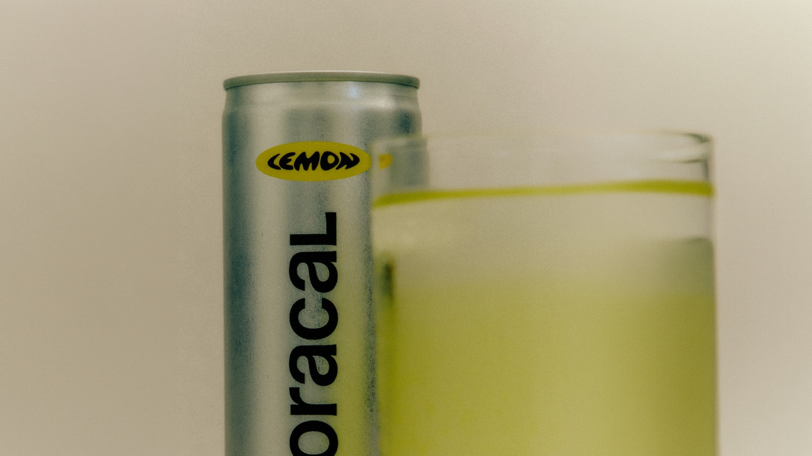

New Collection

더미 섹션 1
아래로 스크롤해 브라우저 바(주소창 · 하단 내비게이션)가 사라지게 한 뒤, 다시 맨 위로 올라가 히어로가 늘어났는지 확인하세요.
디버그 오버레이의 hero 값과 visualViewport 값이 스크롤 전후로 어떻게 바뀌는지 비교하면 됩니다.
더미 섹션 2
vh 는 대부분의 모바일 브라우저에서 "바가 숨었을 때"(large) 높이라 첫 화면에서 하단이 가려질 수 있고, dvh 는 바의 노출 상태를 따라 실시간으로 바뀝니다.
더미 섹션 3
우하단 버튼으로 단위를 바꾸면 URL 의 ?unit= 도 함께 바뀝니다. 그 상태로 링크를 복사해 다른 기기로 보내면 같은 조건으로 열립니다.